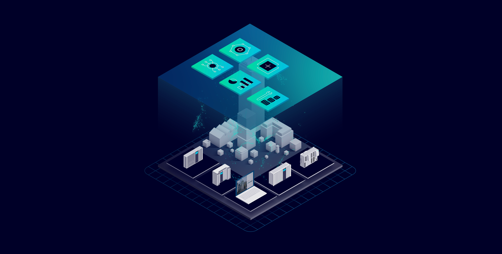
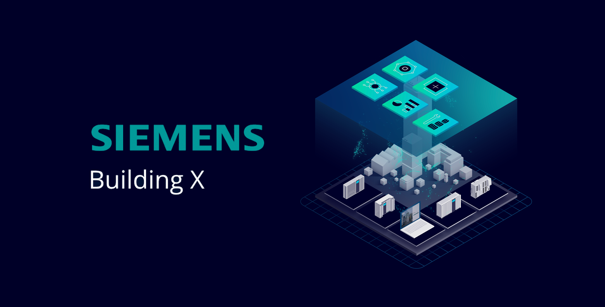
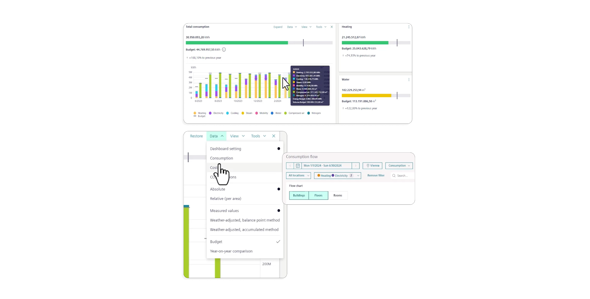

Monitoring how much energy complex building portfolios use and produce — from discovery to handoff.Monitorare quanta energia consumano e producono portfolio di edifici complessi — dalla discovery all'handoff.

Energy Manager is part of Siemens' Building X: a product to monitor and optimise energy use and production across complex building portfolios.Energy Manager fa parte di Building X di Siemens: un prodotto per monitorare e ottimizzare consumo e produzione di energia su portfolio di edifici complessi.
I was senior UX designer across the whole process — discovery, concept validation, detailed interaction design and developer handoff.Ero senior UX designer sull'intero processo — discovery, validazione dei concept, interaction design di dettaglio e handoff agli sviluppatori.

New dashboards and site-manager panels went live, built on shared components and internal standards for shapes and colours. The scope 1, 2 and 3 emissions dashboard went end to end — it was needed to earn ISO 14067 certification.Sono andate online nuove dashboard e pannelli di gestione dei siti, costruiti su componenti condivisi e standard interni di forme e colori. La dashboard delle emissioni scope 1, 2 e 3 l'ho seguita end-to-end — serviva per ottenere la certificazione ISO 14067.

Don't let feasibility lead the design: what looks impossible often isn't.Non far guidare il design dalla fattibilità: quello che sembra impossibile spesso non lo è.
Keep the mockups of your bold concepts, even the rejected ones.Conserva i mockup dei concept più audaci, anche quelli scartati.